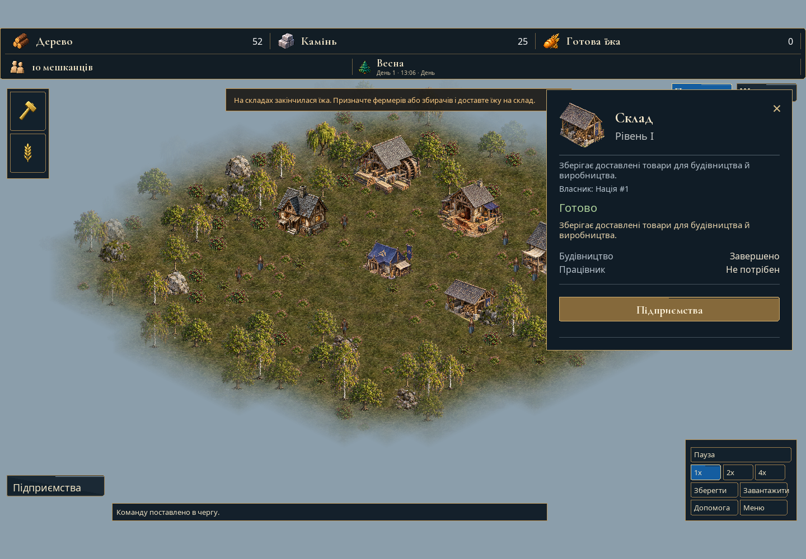

Ribterra · базове графічне оновлення
Що зміниться після кожного кроку
Початок — реальний старий вигляд. Далі кожний макет додає одну видиму групу змін: UI → земля → будівлі → дощ → зима.
V00 — справжній кадр. V01–V05 — макети, не готові оновлення. AI може зміщувати деталі; для реалізації потрібні точні native captures. Цифри погоди і частина відкритої сцени в макетах ілюстративні.


Додалося на цьому кроці
Залишається з попереднього
Що робити в коді
Приймати за доказом: